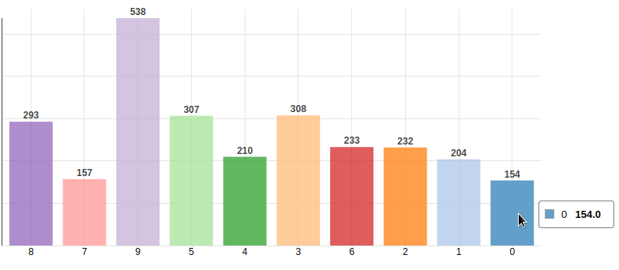
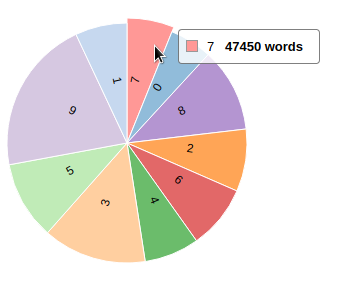
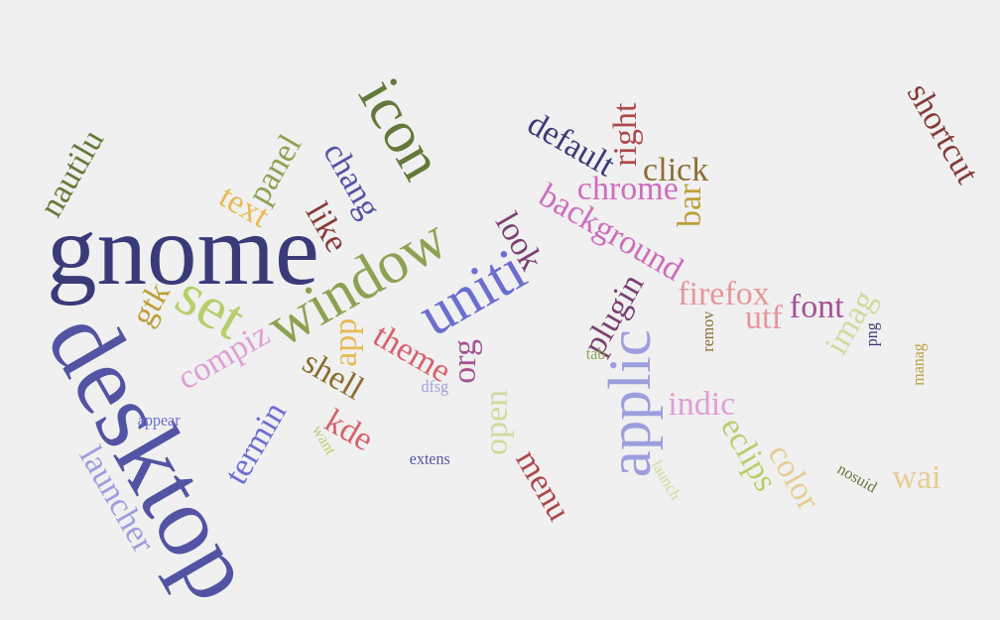

In this section you can visualize an overview of tickets and its topics. It is divided in two main plots:
- Bar plot of last topics: In this plot you can observe the topics that the last tickets talk about.
You can have a snapshot of the main issues of your system at this moment.

- Pie Chart of topics history: This chart shows you all the topics of your system and how important they are
in your system. Place your mouse over each one and see how many words form it.

With both charts you can click a topic and you will see a cloud of words that will help you to describe the topic, see which words compose it
and how relevant they are. You can also change the default name of the topic in order to identify it better.
